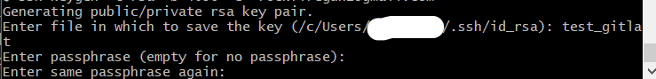
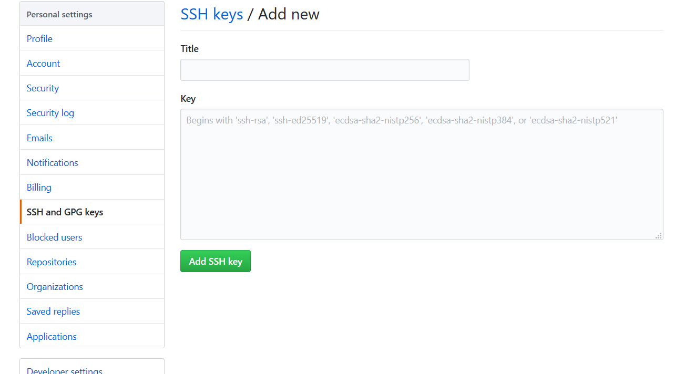
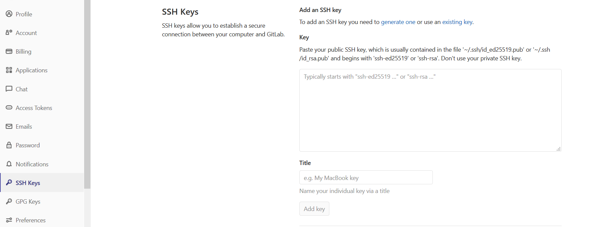
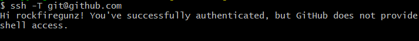
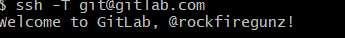

安裝git ssh key
如果電腦上都沒有 git ssh key
可以打上 ssh-keygen 同時建立 github 跟 gitlab 的 key，可參照這篇文章實作 - 同一部電腦管理 Github 與 Gitlab SSH keys
因為我PC 已經有一個github ssh key，所以補上gitlab ssh key就行了。
輸入 ssh-keygen -t rsa -b 4096 -C "email@example.com"

第一個是金鑰名稱，不輸入會使用 id_rsa，會覆蓋原本的，所以我打上 test_gitlab
2.3 就是密碼了
再到c:\User\使用者\.ssh 輸入 touch config
confing 內容輸入
1 | # github |
接下來就是將 github 及 gitlab 的key，貼到各自的ssh key裡面
將 id_rsa.pub 的內容 貼到 github key

將 test_gitlab.pub 的內容 貼到 gitlab key

ssh key 標題自己定義。
測試 github 跟 gitlab 有無成功。
ssh -T git@github.com

ssh -T git@gitlab.com
